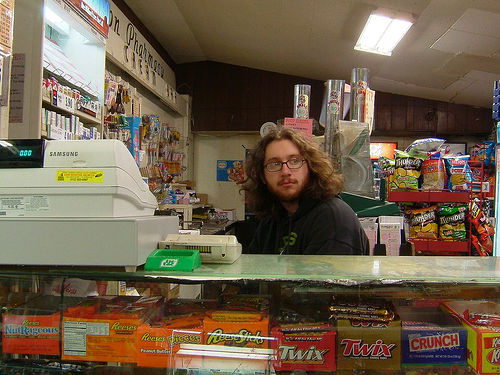
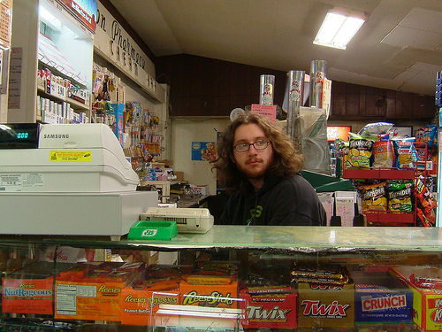
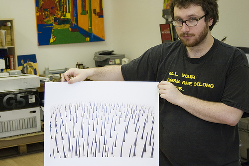
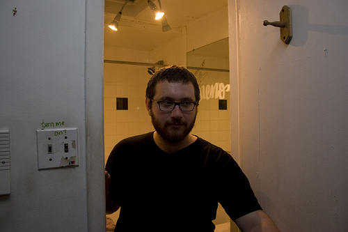
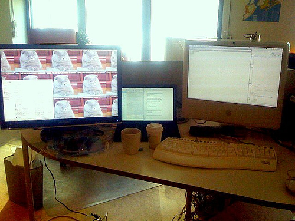

Junction Pharmacy
A pharmacy in Pittsburgh, Pennsylvania.
A pharmacy in Pittsburgh, Pennsylvania.
An art store in Pittsburgh, Pennsylvania. Note:photo inaccurately depicts Utrecht Chelsea

A package design studio in Manhattan. I drew things, fell in love with Adobe Illustrator, and built servers.
A medium-sized ad and branding agency in Manhattan. RIP thehappycorp.
A workflow automation company in Manhattan, specializing in small to medium-sized design agencies in the city.
A 125-year old business publication, except on the internet.